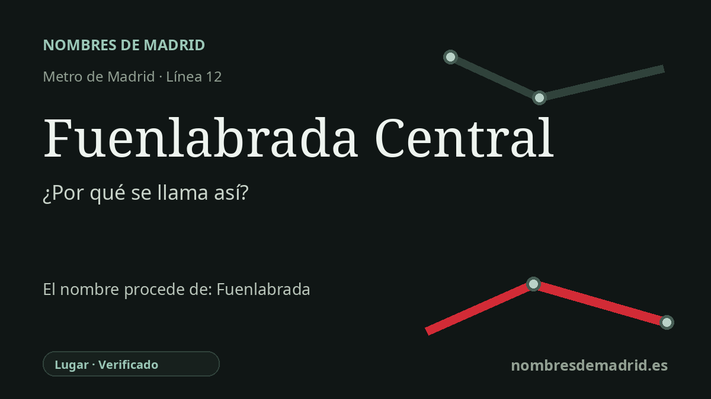

Publicado el · Investigación de Nombres de Madrid · Cómo verificamos cada origen · 6 fuentes consultadas
Respuesta rápida
Fuenlabrada Central debe su nombre a su función como estación central e intercambiador de MetroSur en Fuenlabrada. El topónimo municipal significa 'fuente labrada', por una antigua fuente de piedra recordada en la documentación de época moderna.
La historia del nombre
El nombre Fuenlabrada Central es, ante todo, práctico: identifica la estación de la línea 12 de MetroSur que sirve al intercambiador ferroviario central de Fuenlabrada. La Comunidad de Madrid sitúa la estación de Metro junto a la estación de Cercanías de Renfe, con accesos desde el paseo de Roma y el paseo del Ferrocarril, de modo que la palabra Central la distingue de las demás estaciones de MetroSur en el municipio.
Detrás del nombre de la estación está el topónimo más antiguo Fuenlabrada. Toponomasticon Hispaniae lo interpreta como un compuesto castellano claro de fuente y labrada: es decir, una fuente trabajada, tallada o labrada. En este contexto, labrada se entiende mejor no como 'arada', sino como 'trabajada' en piedra, sentido conservado en el léxico de canteros y picapedreros.
La explicación documental clásica procede de las Relaciones Topográficas de Felipe II, de 1576. En la respuesta local se decía que el lugar se llamaba Fuenlabrada porque cerca de él había una fuente vieja de piedra labrada y hecha de cal y canto, y que era opinión del vecindario que la habían hecho los moros. La misma tradición relaciona la formación del pueblo con gentes procedentes de las cercanas Loranca y Fregacedos, dos aldeas despobladas.
La estación moderna pertenece al proyecto MetroSur de 2003, una línea 12 circular concebida para unir Alcorcón, Móstoles, Fuenlabrada, Getafe y Leganés sin obligar a pasar siempre por el centro de Madrid. Fuenlabrada Central es uno de los puntos de intercambio de la línea con la red de Cercanías, por eso su nombre alude tanto a la ciudad como a su función dentro del transporte público.
La etimología es sólida, pero conviene matizar un detalle. La explicación de la 'fuente labrada' está apoyada por documentación temprana y por investigación toponímica moderna; en cambio, afirmar que la fuente era morisca o hecha por los moros debe presentarse como una creencia histórica recogida en el siglo XVI. La estación de Metro parece haber abierto ya con su nombre actual el 11 de abril de 2003, mientras que la estación ferroviaria contigua se denomina oficialmente Fuenlabrada.